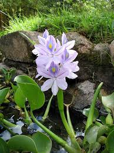

Pontederiaceae
The Pontederiaceae family, commonly known as the Pickerelweed Family or Water Hyacinth Family, is a family of monocotyledonous flowering plants in the order Commelinales. It comprises about 2 genera (with the recent merging of Eichhornia into Pontederia) and around 35 species of annual or perennial aquatic herbs. These plants are found in freshwater habitats throughout tropical and subtropical regions worldwide, extending into temperate zones. The family is known for its often showy, typically blue or violet, bilaterally symmetrical flowers and includes notorious invasive species like the water hyacinth.
Overview
Pontederiaceae consists entirely of aquatic herbs adapted to freshwater environments like ponds, lakes, rivers, and marshes. They exhibit various habits, including free-floating (Pontederia crassipes - water hyacinth), emergent (Pontederia cordata - pickerelweed), and submerged forms (Heteranthera species). Many possess spongy tissues (aerenchyma) in stems or petioles aiding buoyancy. The leaves are highly variable depending on the species and habitat, ranging from linear submerged leaves to broad, floating or emergent blades with distinct, sometimes inflated, petioles.
The flowers are often attractive, typically blue, violet, white, or yellow, and usually display bilateral symmetry (zygomorphy). They possess 6 petal-like tepals fused into a basal tube, often with one tepal differing in size or markings. Heterostyly (specifically tristyly, with three different flower forms varying in style and stamen lengths) is common in Pontederia (including former Eichhornia), promoting outcrossing. While some species are valued ornamentals, Pontederia crassipes (water hyacinth) is infamous as one of the world's worst invasive aquatic weeds, choking waterways in warm regions globally.
Phylogenetically, Pontederiaceae belongs to the Commelinales order within the Commelinid monocots, closely related to Philydraceae and Haemodoraceae.
Quick Facts
- Scientific Name: Pontederiaceae
- Common Name: Pickerelweed Family, Water Hyacinth Family
- Number of Genera: Approximately 2 (Pontederia incl. Eichhornia, Heteranthera)
- Number of Species: Approximately 35
- Distribution: Pantropical and subtropical, extending into temperate zones; freshwater aquatic habitats.
- Evolutionary Group: Monocots - Commelinids - Commelinales
Key Characteristics
Growth Form and Habit
Annual or perennial aquatic herbs. Habits include free-floating, emergent (rooted in substrate with leaves/flowers above water), or submerged. Often rhizomatous or stoloniferous. Stems and petioles frequently contain spongy aerenchyma tissue for buoyancy.
Leaves
Leaves are alternate or basal, simple, with entire margins and parallel venation. Leaf morphology is highly variable: submerged leaves are often linear or ribbon-like; floating or emergent leaves typically have broader blades (e.g., ovate, cordate, reniform) and distinct petioles. Petioles are sometimes conspicuously inflated and spongy (e.g., Pontederia crassipes). Leaf bases are sheathing.
Inflorescence
Flowers are arranged in a terminal spike, raceme, or panicle, sometimes reduced to a single flower. The inflorescence is often subtended by a prominent, spathe-like leaf sheath.
Flowers
Flowers are generally showy, bisexual, and typically zygomorphic (bilaterally symmetrical), though sometimes nearly actinomorphic. Colors include blue, violet, purple, white, or yellow, often with contrasting markings (nectar guides) on one tepal. Key features include:
- Perianth: Consists of 6 petaloid tepals arranged in two whorls of 3. The tepals are fused at the base to form a distinct perianth tube. Tepals are often unequal in size or shape, with the upper median one sometimes larger or differently colored/marked.
- Androecium: Features typically 6 stamens (sometimes reduced to 3 or 1, e.g., in Heteranthera). Stamens are attached to the perianth tube (epitepalous) and are often unequal in length (heteranthy); filaments may be curved, winged, or hairy. Anthers usually dehisce via longitudinal slits.
- Gynoecium: Features a superior ovary composed of 3 fused carpels. The ovary is typically 3-locular with numerous ovules on axile placentas, but sometimes can be 1-locular with parietal placentation or reduced to a single locule with one ovule. The style is simple and slender, ending in a small, capitate or slightly 3-lobed stigma. Heterostyly (specifically tristyly - three floral morphs differing in style and stamen lengths) is common in Pontederia (incl. Eichhornia).
Fruits and Seeds
The fruit is typically a thin-walled loculicidal capsule containing numerous seeds, often remaining enclosed within the persistent, withered perianth tube. Sometimes the fruit is modified into a one-seeded achene or utricle. Seeds are small, often ribbed or winged longitudinally.
Chemical Characteristics
The family is not known for particularly distinctive secondary metabolites like potent toxins or medicinal compounds, although oxalates may be present. Their primary significance lies in their ecological roles and morphology.
Field Identification
Identifying Pontederiaceae involves recognizing their aquatic habit and distinctive floral and vegetative features:
Primary Identification Features
- Habit: Aquatic herbs (floating, emergent, or submerged) in freshwater.
- Leaves: Highly variable; emergent/floating leaves often broad with distinct petioles; petioles sometimes inflated (P. crassipes); submerged leaves often linear. Sheathing bases.
- Flowers: Showy, usually zygomorphic, typically blue/violet/white/yellow.
- Perianth: 6 tepals fused basally into a tube, often unequal.
- Stamens: Usually 6, often of unequal lengths, attached to perianth tube.
- Ovary: Superior, 3-carpellate.
- Inflorescence: Often a spike or raceme subtended by a spathe-like bract.
- Fruit: Typically a capsule enclosed in persistent perianth.
Seasonal Identification Tips
- The showy flowers are the most obvious feature during the blooming season (often summer).
- The inflated petioles of water hyacinth (Pontederia crassipes) are diagnostic year-round for that species.
- Look for the spathe-like bract associated with the inflorescence.
Common Confusion Points
Distinguishing Pontederiaceae from other aquatic monocots:
- Alismataceae (Water Plantain Family): Flowers usually actinomorphic with 3 distinct green sepals and 3 (usually white) petals; carpels usually numerous and free (apocarpous).
- Hydrocharitaceae (Frog's-bit Family): Flowers often have distinct sepals and petals; ovary is characteristically inferior.
- Iridaceae (Iris Family - aquatic species): Flowers have 6 tepals but only 3 stamens, and the ovary is inferior. Leaves are often equitant (iris-like).
- Commelinaceae (Spiderwort Family): Some aquatic members, but flowers typically have 3 distinct petals (often blue), 3 sepals, and often ephemeral flowers opening for only part of a day.
- The combination of aquatic habit, 6 tepals fused into a tube, often zygomorphic symmetry, usually 6 unequal stamens, and a superior 3-carpellate ovary is key for Pontederiaceae.
Field Guide Quick Reference (Pontederiaceae)
Look For:
- Aquatic herbs (freshwater)
- Leaves variable, petioles sometimes inflated
- Flowers: Showy, usually zygomorphic, blue/violet/white/yellow
- Perianth: 6 tepals fused into tube
- Stamens: Usually 6, unequal
- Ovary: Superior, 3-carpellate
- Inflorescence often with spathe-like bract
- Fruit: Capsule (usually)
Key Distinctions:
- 6 fused tepals & superior ovary (vs. distinct sepals/petals & free carpels in Alismataceae)
- Superior ovary (vs. inferior in Hydrocharitaceae, Iridaceae)
- 6 stamens (usually) (vs. 3 in Iridaceae)
- Different flower structure than Commelinaceae
Notable Examples
Pontederiaceae includes well-known aquatic plants, some valued, others problematic:

Pontederia cordata
Pickerelweed
A common emergent aquatic herb native to the Americas. It has heart-shaped or lanceolate leaves and dense spikes of attractive blue-violet flowers. An important plant in native wetland ecosystems.

Pontederia crassipes (syn. Eichhornia crassipes)
Water Hyacinth
Native to South America, this free-floating aquatic plant is infamous for its rapid growth and invasive potential in warm waterways worldwide. It is recognized by its bulbous, inflated petioles that provide buoyancy and its showy spike of lavender-blue flowers.

Heteranthera spp.
Mud Plantains
A diverse genus found primarily in the Americas, including species with submerged linear leaves and others with floating or emergent broader leaves. Flowers are often smaller than in Pontederia, sometimes yellow or white, and may have only 1 or 3 stamens. H. limosa is an example with blue flowers.
Phylogeny and Classification
Pontederiaceae belongs to the order Commelinales, which is part of the Commelinid clade of monocots. This clade also includes important groups like grasses, palms, gingers, and bananas.
Within Commelinales, Pontederiaceae forms a well-supported clade with the families Philydraceae (Frogsmouth family) and Haemodoraceae (Bloodwort/Kangaroo Paw family). These three families share certain chemical characteristics and tendencies towards zygomorphic flowers. Pontederiaceae represents the primary aquatic lineage within this group.
Recent taxonomic revisions, strongly supported by molecular data, have led to the inclusion of the genus Eichhornia (including the water hyacinth) within a more broadly defined genus Pontederia to maintain monophyletic genera within the family.
Position in Plant Phylogeny
- Kingdom: Plantae
- Clade: Angiosperms (Flowering plants)
- Clade: Monocots
- Clade: Commelinids
- Order: Commelinales
- Family: Pontederiaceae
Evolutionary Significance
Pontederiaceae is evolutionarily significant for several reasons:
- It represents a major lineage of aquatic monocots, showcasing adaptations to diverse freshwater habitats (floating, emergent, submerged).
- The evolution of showy, often zygomorphic flowers and complex reproductive systems like tristyly provides excellent models for studying pollination biology and floral evolution.
- The family includes one of the world's most impactful invasive species (Pontederia crassipes), highlighting the ecological consequences of rapid adaptation and dispersal.
- Its phylogenetic position within Commelinales helps to understand the diversification of this major monocot order and the transitions between terrestrial and aquatic lifestyles.